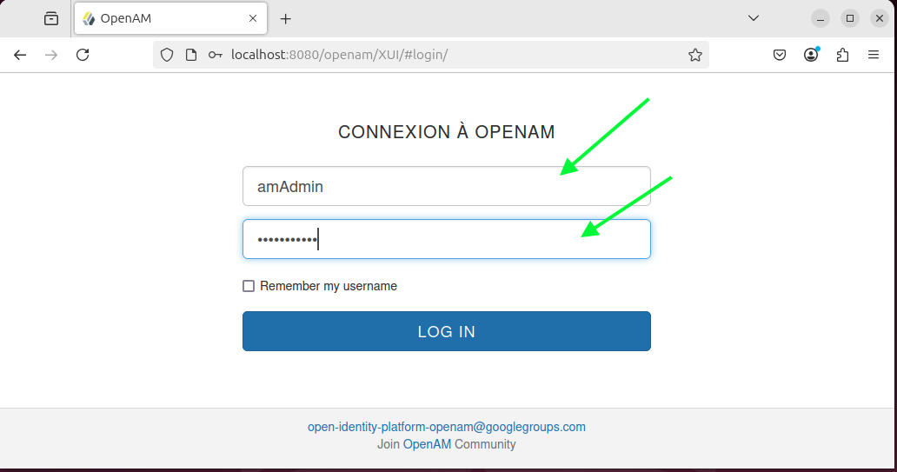

Objectif du projet
Mettre en place une solution de gestion des identités et des accès avec OpenAM afin de comprendre le fonctionnement d’un système IAM, la gestion des utilisateurs, l’authentification centralisée et les politiques d’accès.
Architecture utilisée
- Un serveur applicatif dédié à OpenAM.
- Un environnement de laboratoire isolé.
- Un navigateur client pour tester l’authentification.
- Des comptes utilisateurs de test.
Outils utilisés
- OpenAM
- Navigateur web
- Machine virtuelle de laboratoire
- Documentation technique IAM
Étapes réalisées
- Préparation de l’environnement de laboratoire.
- Installation et configuration initiale de OpenAM.
- Création de comptes utilisateurs de test.
- Configuration des paramètres d’authentification.
- Validation du processus de connexion.
- Test des contrôles d’accès selon les profils utilisateurs.
- Documentation des observations et limites de la solution.
Captures d’écran anonymisées


Résultats obtenus
- OpenAM installé et accessible dans l’environnement de test.
- Authentification fonctionnelle avec des comptes de laboratoire.
- Meilleure compréhension des principes IAM.
- Documentation des étapes de configuration.
Recommandations
- Utiliser HTTPS pour sécuriser les échanges.
- Appliquer une politique de mots de passe robuste.
- Limiter les privilèges selon le principe du moindre privilège.
- Activer la journalisation des événements d’authentification.
- Prévoir une intégration avec un annuaire centralisé.
Compétences démontrées
- Gestion des identités et des accès.
- Compréhension des mécanismes d’authentification.
- Configuration d’une solution IAM.
- Documentation technique.